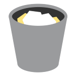

<ion-header>
	<ion-toolbar>
		<ion-item lines="none">
			<ion-avatar routerLink="{{route}}">
				
			</ion-avatar>
			<span style="padding-left:15px">Explore</span>
		</ion-item>
		<ion-buttons slot="end">
			<ion-button (click)="switchMode()">
				<ion-icon slot="icon-only" name="switch"></ion-icon>
			</ion-button>
		</ion-buttons>

	</ion-toolbar>
</ion-header>

<ion-content *ngIf="mode == 1">
	<ion-card *ngFor="let mentor of mentors1" (click)="goToMember(mentor)">
		<div style="height:225px;overflow:hidden">
			
		</div>
		<div style="position:absolute;top:0%;width:100%;text-align:center">
			<div style="text-align: right">
				<p style="color:black;font-weight:750;font-family:'Verla Round', sans-serif;padding-right:15px;text-shadow: 0 0 50px #fff">{{mentor.match + '%'}}</p>
			</div>
			<div style="padding-left:15px;padding-right:15px">
				<h2 style="color:black;font-weight:750;font-family: 'Varela Round', sans-serif;margin-bottom:0;text-shadow: 0 0 50px #fff">{{mentor.name}}</h2>
				<h3 style="color:black;font-weight:500;font-family: 'Varela Round', sans-serif;margin-top:5px;text-shadow: 0 0 50px #fff">{{mentor.job}}</h3>
				<span style="height:100px;color:black;font-weight:250;font-family: 'Varela Round', sans-serif;text-shadow: 0 0 50px #fff">
					{{mentor.bio}}
				</span>
			</div>
		</div>
	</ion-card>
</ion-content>
<!-- checkmark x -->
<ion-content *ngIf="mode==2">
	<ion-card style="transform:translateY(1%);">
		<div style="height:425px;overflow:hidden" routerLink="{{'/profile/' + mentor.id}}">
			
		</div>
		<div style="position:absolute;bottom:15%;width:100%;text-align:center;text-shadow: 0 0 20px #fff">
			<div style="padding-left:15px;padding-right:15px">
				<h2 style="color:black;font-weight:750;font-family: 'Varela Round', sans-serif;margin-bottom:0">{{mentor.name}}</h2>
				<h3 style="color:black;font-weight:500;font-family: 'Varela Round', sans-serif;margin-top:5px">{{mentor.job}}</h3>
				<span style="height:100px;color:black;font-weight:250;font-family: 'Varela Round', sans-serif;">
					{{mentor.bio}}
				</span>
			</div>
		</div>
		<ion-card-content style="padding: 0" *ngIf="mentor.id != -1">
			<ion-buttons style="padding: 10px">
				<ion-button style="width:50%;border-right:1px solid #e5e3e3" routerLink="{{'/profile/' + mentor.id}}">
					<ion-icon name="contact"></ion-icon>
				</ion-button>
				<ion-button style="width:50%" (click)="switchMentors()">
					<ion-icon name="close"></ion-icon>
				</ion-button>
			</ion-buttons>
		</ion-card-content>
	</ion-card>
</ion-content>
<!-- show 6 circles drag and drop -->
<ion-content *ngIf="mode==3">
	<ion-grid style="transform:translateY(12%)">
		<ion-row>
			<ion-row dragula="MENTORS" [(dragulaModel)]="subsetMentors" style="width:100%">
				<ion-col size="6" *ngFor="let mentor of subsetMentors">
					<ion-avatar style="width:150px;height:150px;margin-left:auto;margin-right:auto" routerLink="{{'/profile/' + mentor.id}}">
						
					</ion-avatar>
				</ion-col>
			</ion-row>
			<ion-row style="width:100%">
				<ion-col size="6" ng-if="!finishedSearch" dragula="MENTORS" [(dragulaModel)]="favorites" class="no-drag">
					<ion-avatar style="width:75px;height:75px;margin-left:auto;margin-right:auto;border:1px solid #FCAF17;text-align:center;position:relative;top:20%">
						
					</ion-avatar>
				</ion-col>
				<ion-col size="6" ng-if="!finishedSearch" dragula="MENTORS" [(dragulaModel)]="garbage" class="no-drag">
					<ion-avatar style="width:75px;height:75px;margin-left:auto;margin-right:auto;border:1px solid #9A9B9D;text-align:center;position:relative;top:20%">
						
					</ion-avatar>
				</ion-col>
			</ion-row>
		</ion-row>
	</ion-grid>
</ion-content>
<ion-content *ngIf="finishedSearch && mode == 3" style="text-align:center">
	<span>Favorited Mentors</span>
	<ion-grid style="transform:translateY(12%)">
		<ion-row>
			<ion-row>
				<ion-col size="6" *ngFor="let mentor of favorites">
					<ion-avatar style="width:150px;height:150px;margin-left:auto;margin-right:auto" routerLink="{{'/profile/' + mentor.id}}">
						
					</ion-avatar>
				</ion-col>
			</ion-row>
		</ion-row>
	</ion-grid>
</ion-content>

